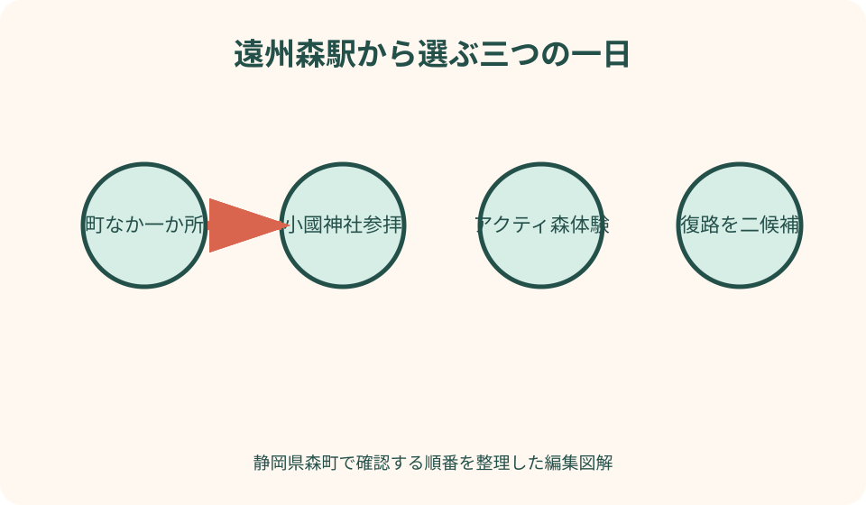
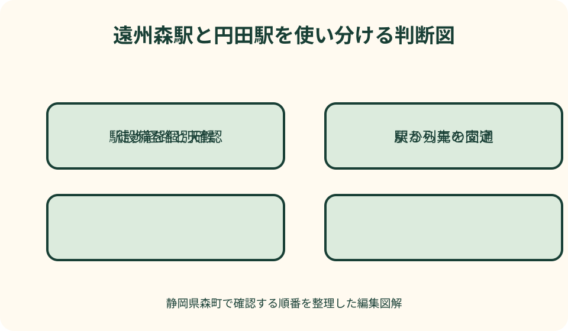

天浜線・駅・一日旅｜最終確認 2026-08-10
静岡県森町を天浜線で巡る一日｜遠州森駅・円田駅と三つの無理ない行程
天浜線で森町を巡る日は、降りる駅を増やすより、どの駅から何を一つ体験し、どの列車で帰るかを先に決める方が充実します。遠州森駅は町なかとバス・タクシー接続を考えやすい一方、円田駅は別の地区へ降りる選択肢です。町なか、小國神社、アクティ森を同日に全部入れると、列車とバスの待ち時間が行程を圧迫します。主目的を一つ、余れば一つ追加という組み方が実用的です。

編集イラスト一日の目的を駅ではなく体験から一つ選ぶ
最初に決めるのは乗降駅の数ではありません。森町の町並みと食を歩く、小國神社へ参拝する、アクティ森で体験するという三つから主目的を一つ選びます。主目的が決まれば、遠州森駅で降りる理由と接続交通が見えてきます。
二つ目の目的は、時間が余った場合だけ使う候補にします。町歩きの後に和菓子を買う、小國神社参拝後に門前で短く休む、アクティ森で地場産品を見る程度です。別地区へ移動する大きな目的を追加しません。
円田駅で降りること自体を目的にする場合は、駅の周辺を見て同駅から列車へ戻る小さな行程にします。遠州森駅から使えるバスやタクシーが円田駅にも同じ条件であると考えず、駅公式と現地交通を別に確認します。
昼食も主目的との位置関係で決めます。食べたい店を先に選んで別地区へ移るのではなく、利用駅と目的地の間にある候補を公式観光案内から探します。休業や満席なら補食でつなぎ、列車や予約したバスを遅らせないよう第二候補を持ちます。
家族や同行者には、行きたい場所を三つ挙げてもらった後、一位を決めてもらいます。希望を全部並べるのではなく、歩行、待ち時間、食事、帰宅希望を重ね、全員が無理なく往復できる一つを選びます。
往路一つ・復路二つを天浜線公式で確認する
列車時刻は本文へ固定しません。天浜線公式の運賃と時刻表から訪問日の列車を確認します。平日と休日、改正、臨時変更、運休を見分け、検索結果の古い要約を予定表へ写しません。
往路は目的の接続へ余裕を持って着く一本を選びます。復路は本命と、その次の候補を選びます。本命だけにすると、店の会計、バス遅延、雨宿りが帰宅全体へ影響します。次候補で帰宅できない日程なら、滞在を短くします。
運賃は乗車駅と降車駅、お得な乗車券、イベント商品などで確認方法が変わります。天浜線公式の運賃表と乗車券案内を使い、複数回乗降する方が本当に適切かを比較します。乗り放題という名称だけで対象日や列車を決めません。
予定表には列車の方向も書きます。掛川方面と天竜二俣方面を駅名だけで覚えず、ホーム案内と行先表示を確認します。同じ遠州森駅へ戻っても、帰宅方向を間違えれば一日の余裕を失います。
遠州森駅と円田駅を同じ機能の駅として扱わない
遠州森駅公式は、駅員、一般トイレ、公衆電話、バス・タクシー乗り換えを設備情報に掲載し、駅舎と上りホームが登録有形文化財であることも紹介しています。町なか徒歩や接続交通を使う旅の軸にしやすい駅です。
円田駅にも天浜線の個別駅ページがあります。所在地、設備、お知らせを同駅ページで確認します。遠州森駅の窓口、トイレ、タクシー、バス表示を円田駅へコピーせず、必要な設備が掲載されていなければ鉄道会社へ尋ねます。
複数駅を使うなら、行きと帰りで駅を変える理由が必要です。町歩きで別駅まで安全に歩ける、訪問先が別駅に近いなど、公式地図と道路で確認できる場合に限ります。地図上の直線距離だけで駅間を歩きません。
途中下車するたびに、次列車までの待ち場所、トイレ、飲料、雨天時の退避を確認します。駅名が連続しているから短時間で回れるとは限りません。設備が不明な駅は、天浜線へ問い合わせるか、設備を確認済みの駅を往復拠点にします。
無人または窓口対応時間外の可能性も考え、きっぷの買い方と精算方法を天浜線公式で確認します。駅に着けば係員へ聞けるという予定を置かず、乗り方、ホーム、帰りの方向を出発前に共有します。
町なか徒歩を主目的にする一日
町なかの日は遠州森駅を出発点と帰着点にします。森町公式の観光案内・地図で、町並み、飲食、菓子、森山焼など候補の位置を確認し、駅から一つの輪として歩ける範囲へ絞ります。
午前は文化財の駅舎を安全に見てから町なかへ歩き、昼食または茶店を一つ選びます。午後は同じ地区で一か所だけ追加し、復路列車より十分早く駅へ戻ります。営業時間と休業は個店公式で当日確認します。
徒歩所要時間は大人の地図表示だけで決めません。信号、歩道、撮影、買い物、高齢者、子ども、荷物を加えます。雨天や夏日は歩行範囲を半分にし、駅へ戻る時刻を前倒しします。
列車待ちが長くても、遠い店へ最後の買い物に行きません。駅周辺で休む、駅舎を見る、次のホームを確認する時間へ変えます。町歩きの成果を訪問数で測らず、一つの店や町並みを落ち着いて見る日にします。

小國神社参拝を主目的にする一日
小國神社の日は、遠州森駅で秋葉バス小國神社開運線へ接続します。天浜線と秋葉バスは別事業者なので、列車時刻、バスの運行カレンダー、乗り場、運賃をそれぞれの公式で確認します。
参拝後の神社発バスを先に決め、その便へ戻れる範囲で行動します。参拝、御朱印、紅葉、ことまち横丁を全部固定せず、参拝を第一にします。授与所や食事の待ちが長ければ追加目的を省きます。
紅葉、初詣、祭事の日は、小國神社公式の交通と最新案内も確認します。通常の所要時間や乗り場が同じとは限りません。前年の臨時バスや照明演出を訪問年にもあると考えません。
接続が成立しない日は、事前手配したタクシーか訪問日の変更を選びます。駅から神社まで歩くことを簡単な代案にせず、距離、道路、日没を考えます。町なか徒歩の日へ切り替える案も持ちます。
アクティ森体験を主目的にする一日
アクティ森の日は、遠州森駅から森町営バス吉川線を確認します。町公式時刻表で運行日、乗降停留所、予約印、予約期限、予約先を見ます。同じ路線の全便が予約制とは限らないため、自分が使う便を一つずつ確認します。
陶芸や屋外体験は、バスが着けば参加できるとは限りません。アクティ森公式で営業、受付、予約、持ち物を確認し、バス到着から受付までの歩行時間を加えます。開始直前の接続は避けます。
帰り便は、体験の終了時刻に着替え、片付け、作品手続き、買い物、停留所までの移動を加えて選びます。施設にバスを待たせてもらえると期待しません。余裕が不足する体験は別の時間または別日にします。
雨や川の状態で屋外体験が変わる場合、施設予約とバス予約の両方へ連絡します。施設が中止を発表しても、町営バス予約が自動で消えるとは限りません。駅周辺へ変更する場合も乗降区間を確認します。
円田駅を加えるなら降りる理由と戻る列車をセットにする
円田駅を行程へ入れる場合、写真だけを撮って次へ進むのではなく、駅周辺で何を見るかを一つ決めます。駅公式の周辺情報と森町観光地図を照合し、歩行可能な道路、店や施設の営業を確認します。
遠州森駅から円田駅へ一駅分移動すること自体にも、待ち時間と運賃がかかります。徒歩で同じ時間に見られる町なかを減らしてまで移動する理由があるかを考えます。駅数を増やすことを旅の完成条件にしません。
円田駅からの帰りは、到着してから時刻表を見るのではなく先に列車を選びます。駅周辺の設備が限られる場合、雨、暑さ、トイレ、飲料の代案も必要です。待てる場所を私有地や店舗の軒下へ勝手に求めません。
行きに遠州森駅、帰りに円田駅を使う片道歩行は、道を実際に確認できる場合だけにします。歩道の有無、交通量、橋、日没、荷物を考え、少しでも不明なら同じ駅へ戻る往復に変えます。
イベント列車と通常列車を置き換えない
天浜線公式のイベント・ニュースには、企画列車、ウォーキング、車両イベントなどが掲載されます。イベント列車は通常列車と予約、受付、料金、乗車区間が異なる可能性があります。通常時刻表に同じ列車があるとは考えません。
イベントへ参加する場合は、開催日、集合駅、解散駅、申込、支払い、遅刻時の扱いを当該案内で確認します。森町観光を追加する時間が本当にあるかを見て、イベントの前後に小國神社やアクティ森を固定しません。
申込完了メールや参加票が必要な企画では、代表者だけの端末に保存しません。同行者へ集合場所と緊急連絡先を共有し、通信できない場合に備えて必要部分を紙でも持ちます。通常乗車券とは別の受付があるかも確認します。
イベント情報が古い場合、同名企画が今年もあると判断しません。公開年、受付状態、中止案内を確認します。検索結果に出ても、公式ページが終了を示していれば通常列車の一日旅へ戻します。
イベント列車が運休または満席なら、通常列車で遠州森駅の町歩きをする代案を持ちます。特別車両に乗れないことを理由に無計画な途中下車を増やさず、通常運賃と復路を確認してから変更します。
雨天日は屋根のある場所を保証せず範囲を縮める
雨天でも天浜線が動けば晴天の行程をそのまま実行できるとは限りません。駅からバス停、店、参道、体験施設までの屋外歩行があります。傘、雨具、濡れた荷物の袋を用意し、歩く距離を減らします。
町なかの日は駅に近い一か所へ絞り、小國神社の日は参拝を中心にし、アクティ森の日は屋外体験の実施を確認します。屋根のある待合や店が必ず開いていると期待せず、駅へ戻る選択を早めにします。
大雨、強風、倒木、道路規制がある場合は、列車だけでなく接続バスも変わる可能性があります。天浜線、森町、各運行者、施設の順に確認します。片方が動いているから目的地まで行けるとは限りません。
靴や衣服が濡れたら、車内へ乗る前に水を拭き、傘をまとめます。座席へ荷物を広げず、ほかの乗客が通れる状態にします。体調が冷えた場合は観光を続けず、早い復路候補へ切り替えます。

乗り遅れたときは次の目的を削る
往路列車へ乗り遅れたら、次の列車で元の行程を圧縮しません。目的地の受付、バス接続、帰り列車をすべて再計算します。接続できなければ、町なか徒歩へ変更するか、その日の訪問を中止します。
遠州森駅でバスを逃した場合、次便が予約制か、予約期限を過ぎていないかを確認します。タクシーが常時待機すると期待せず、配車可否を事業者へ尋ねます。駅から遠い目的地へ歩き始めません。
目的地からの帰り便を逃したら、まず運行事業者と施設へ相談します。家族の迎え、タクシー、次便を比較し、安全な場所で待ちます。暗くなってから別駅を目指して歩く代案は選びません。
復路列車へ乗り遅れても、線路沿いを次駅まで歩く判断をしません。次の列車、タクシー、家族連絡を確認します。遅れを取り戻すのではなく、残りの観光を削って帰路を守ります。
良い点
天浜線を使えば、運転者を一人決めずに車窓と町を楽しめます。遠州森駅は歴史ある駅舎自体が見どころとなり、降車した時点から森町の風景に触れられます。
遠州森駅からは町なか徒歩、路線バス、町営バス、タクシーという選択肢を比較できます。目的を一つに絞れば、車がなくても社寺、体験、食へつながる一日を組めます。
複数駅に個別の公式ページがあり、設備や周辺を駅ごとに確認できます。全駅を同じと見なさず使い分けることで、無理な徒歩や設備の思い込みを減らせます。
注文したい点
森町内の駅から観光地へ進む情報は、鉄道、町、バス、施設に分かれています。日付と目的地を選ぶと、使う駅、接続、予約要否、復路候補を公式情報から一画面へまとめる案内があると計画しやすくなります。
駅設備は有無だけでなく、入口からホーム、トイレ、バス停までの連続した動線が必要です。雨天、車いす、ベビーカー、大荷物の場合の確認先も駅ごとに示してほしいところです。
イベント列車と通常列車は検索上で混ざります。終了済み、申込制、通常乗車可能を明確に表示し、イベント中止時に通常時刻表へ戻る導線があれば、誤った乗車計画を減らせます。
代案・結論
一日は、町なか、小國神社、アクティ森の一つを主目的にします。往路一つ、復路二つを天浜線公式で確認し、必要なバスだけ別の公式でつなぎます。時刻は記事から写しません。
遠州森駅は交通接続の軸、円田駅は個別駅情報を確認して使う別候補です。複数駅を使うなら、降りる理由、駅から先、戻る列車をセットにします。駅数を増やすための途中下車はしません。
雨天、運休、乗り遅れでは、目的を減らします。町なかの一か所、駅舎見学、訪問日変更を代案にし、遠い施設まで歩く、接続のないバスを待つ、最終候補だけに賭ける予定を避けます。
家族メモには主目的、利用駅、往路、復路二候補、接続予約、駅へ戻る時刻、雨天案を残します。出発日には保存画像だけでなく、天浜線、森町、運行者、施設の最新案内を再確認します。
大石の視点
私は天浜線の一日旅を、たくさん回る観光ではなく、戻れる範囲を選ぶ旅として勧めます。列車本数が多い都市と同じ感覚で予定を重ねると、待ち時間が焦りへ変わるからです。
遠州森駅と円田駅を使い分けるときも、駅名の収集ではなく地上の移動を見ます。駅から目的地までの歩道、バス、雨、帰りを確認して初めて、その駅で降りる意味が生まれます。
町なかを一つ歩く、小國神社で参拝する、アクティ森で一つ作る。その一つが往復列車の間に収まれば、十分に読み応えのある一日です。余白を残すことが、地域交通と森町を丁寧に楽しむ方法です。
公式情報・確認先
掲載内容は次の一次情報を基礎に整理しました。営業、料金、催し、交通は変わるため、出発前または手続き前にリンク先で最新情報を確認してください。
- 観光案内・地図（静岡県森町、2026-08-10確認）
- 森町地域公共交通法定計画（静岡県森町、2026-08-10確認）
- 遠州森駅 路線と駅情報（天竜浜名湖鉄道、2026-08-10確認）
- 円田駅 路線と駅情報（天竜浜名湖鉄道、2026-08-10確認）
- イベント＆ニュース（天竜浜名湖鉄道、2026-08-10確認）
- 森町営バスのご案内（静岡県森町、2026-08-10確認）